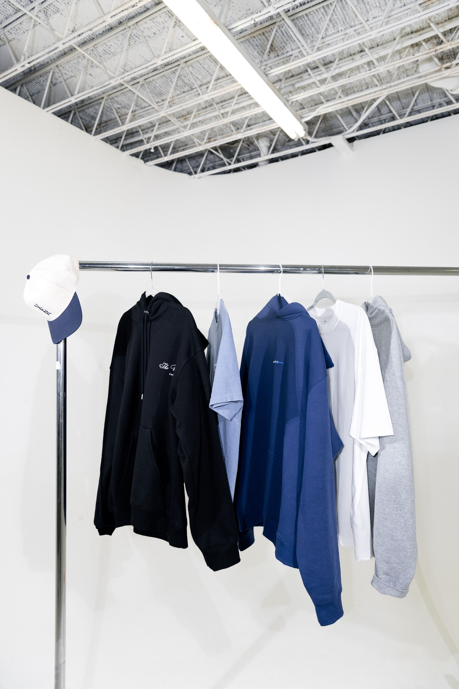

Hems & lengths
Trousers, skirts and sleeves, brought to the right length.
Doorstep alterations and repairs for the pieces you already love.
Choose the change. We’ll help with the rest.

WHAT DOES YOUR GARMENT NEED?
Start with the garment, then choose the adjustment. A good fit should feel simple.
Trousers, skirts and sleeves, brought to the right length.
Refine the fit of shirts, dresses and everyday favourites.
Restore the small details that keep your garment working.
Give worn stitching and damaged areas another chance.
Thoughtful alterations for blazers, kurtas and blouses.
Turn your fabric and fit preferences into a new piece.
GOODBYE, EXTRA ERRANDS.
Pickup, careful tailoring and return delivery. A straightforward process built around your requirements.
Choose your service and share garment details, fit preferences and a pickup enquiry.
Arrange collection, prepare your garments and include any useful fit references.
Tailoring and quality checks come before arranging the return of your garments.
YOUR WARDROBE HAS MORE TO GIVE.
The shirt from your first interview. The dress you always reach for. Good clothes are worth keeping.
Repair a fastening. Refine the shape. Adjust the length. Thoughtful tailoring gives the pieces you love more reasons to stay in your wardrobe.
Give it another chapter ↗Use a reference garment or discuss the measurements relevant to your alteration.
Garment construction, seams and finishing guide the work and quality review.
Discuss requirements, expected work and the estimate before alterations begin.
NO GUESSWORK.
Every garment is different. Pricing in INR depends on fabric, construction, materials and the changes required.
Hems, sleeve lengths and everyday fit refinements.
Request a garment-specific estimateFastenings, seams and garment restoration.
Materials and repair complexityYour fabric, design preferences and measurements.
Discuss the design before pricingCUSTOMER STORIES
“My favourite trousers finally fit the way I wanted. The length feels right, the finish looks neat, and I reach for them more often now.”

Alterations
“A broken fastening had kept my jacket in the wardrobe. Having it repaired gave a favourite piece another chance, with a clean and careful finish.”

Garment repairs
“The measurements and fit details made the process feel personal. My finished garment feels comfortable, with the shape and finish I had in mind.”

Custom tailoring
A FEW THINGS YOU MIGHT WONDER.
Have a different question? Include it with your pickup enquiry.
Tell us which garment you have and what feels wrong about the fit. A reference garment or clear description helps identify the work needed.
Yes. Describe each garment and its required changes separately in your enquiry so the requirements are easy to review.
Ask for a garment-specific estimate in INR. Fabric, construction, repair materials and alteration complexity affect the final price.
Pickup and return timing must be arranged after the requirements and service coverage are reviewed. No fixed turnaround is promised here.
Empty pockets, clean the garments where appropriate and include notes for each piece. A well-fitting reference garment can help communicate your preferred fit.
LITTLE NOTES. BETTER FITS.
Wear the shoes and layers you normally pair with your garment before deciding on the length.
Check the fabric around a damaged seam or fastening. Share these details when requesting a repair.
Keep separate instructions with each garment to make your preferences easy to understand.
READY FOR ANOTHER WEAR?
Tell us what needs changing. Prepare an enquiry with your garment details and service preferences.
ALTER. REPAIR. REWEAR.
Start with a garment you love and tell us what would make it feel right again.